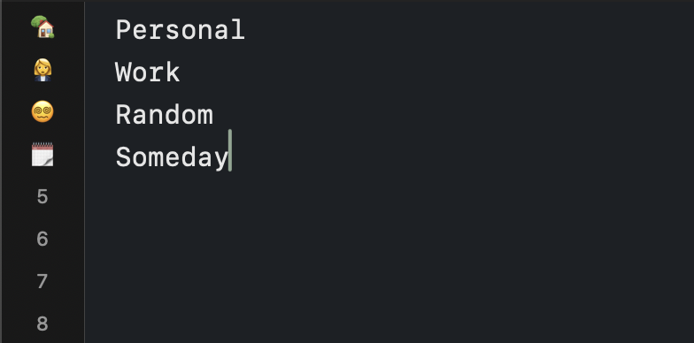
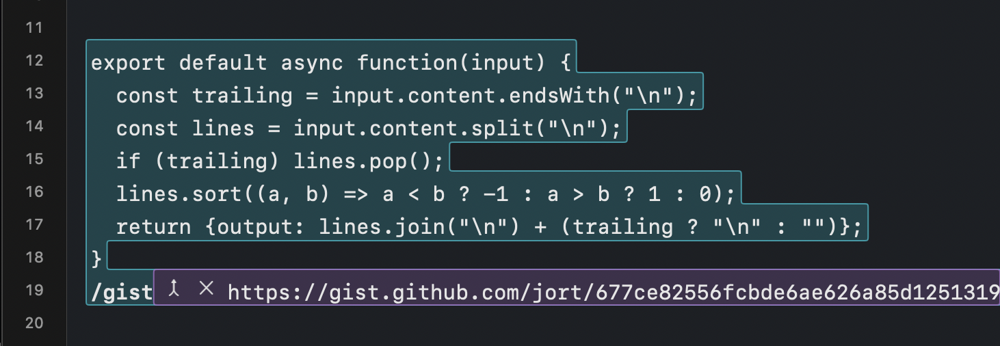
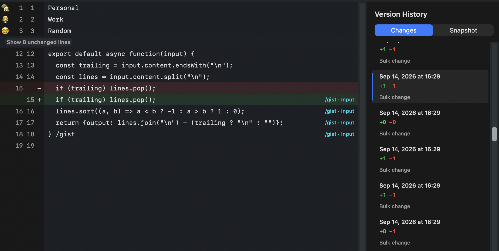

Find your landmarks.

Mark your place with a landmark. Keep jotting, and jump back quickly.
✅ Todos
💬 Meeting topics
💪 Workout tracking
Notes that do more.

Write first, execute later. Sort, rewrite, format JSON, and anything else you can imagine.
/calc
/sort
/copy-rich
/remind
/custom-tool
AI when you actually want it.
Invoke your AI tools with slash commands. Review the output, and merge if it helps.
History is notable.

Rich diffs for every change made, whether it's by you or a tool
diff view
full restores
years of history